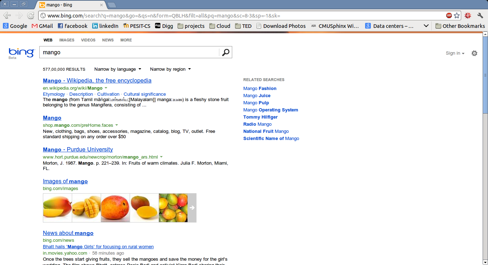
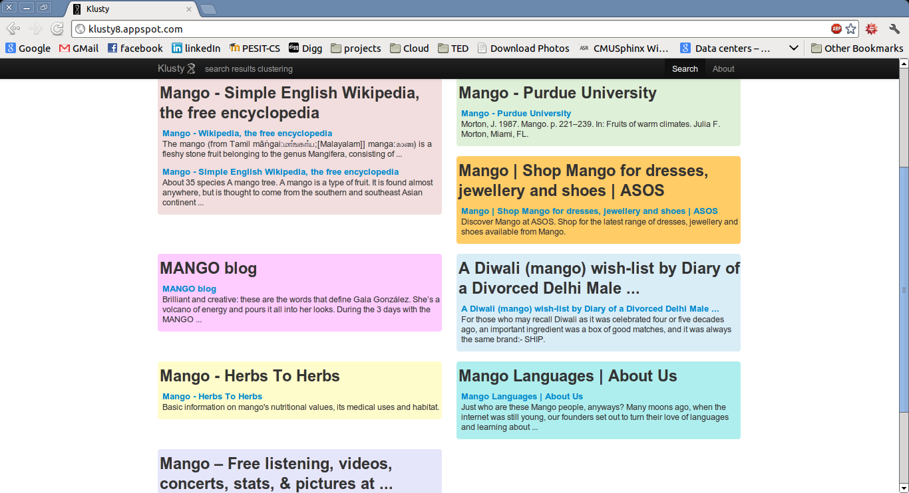

Klusty8
a search results clustering application -- inspired by clusty.com
What?
A typical serach engine displays all the results for a given query without any logical grouping.
bing results for 'mango'

Klusty8 attempts to bring the required clarity. It selects the best of top 50 search results obtained from Microsoft's bing.com and groups them(logically) into 8 clusters based on their content.
Klusty8 results for 'mango'

How?
'k-means'-ish flavour of k-medoids - a partition based clutsering algorithm - is used; since the data involved is non-numeric.
Jaccard similarity is used as the distance measure between the elemets.
The cluster title is the tilte of the "central" search result in the cluster. Since the initial centers are chosen randomly, the clustering may change from search to search.
This application has been developed by applying the different concepts and technologies I have learnt over the past one month:
- Algorithms of the Intelligent Web
- Ajax and jQuery
- RSS
- Google AppEngine and related python frameworks.
Where?
A simple version of the k-medoids algorithm has been implemented - allowing a lot of scope for further improvement.
The complete sourcecode can be found on github